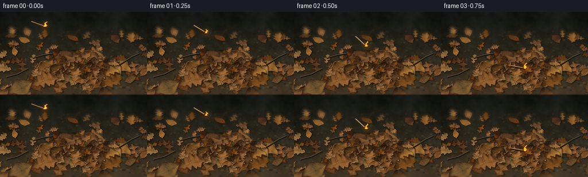
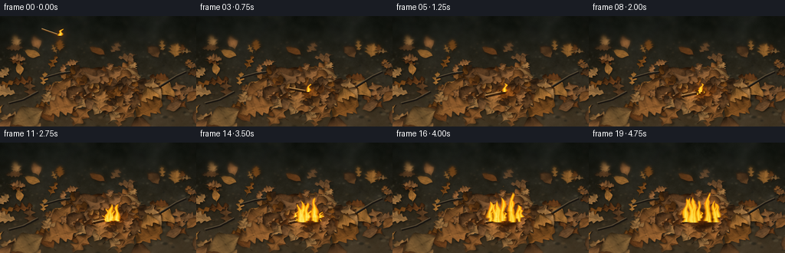

CODING AGENTS AS PIXEL WORLD MODELS
traex/GPT-6.1-Sol · phygen_142
点击播放 · 原生 RGB 像素
逐轮保存的候选
回放视频、检查图与代码变化。
每份候选均可单独播放。实际图片检查记录在下方工具轨迹中。
候选 01播放与检查图
点击播放 · 原生 RGB 像素


展开代码变化
--- 上一保存版本
+++ 本次保存版本
@@ -0,0 +1,323 @@
+from pathlib import Path
+import math
+import numpy as np
+from PIL import Image, ImageDraw, ImageFilter
+import artifact_io
+
+ROOT=Path(__file__).resolve().parent
+S=3
+W,H=256*S,144*S
+rng=np.random.default_rng(142)
+
+def noise(h,w,gy,gx,seed):
+ rr=np.random.default_rng(seed)
+ a=rr.uniform(0,1,(gy,gx)).astype(np.float32)
+ return np.asarray(Image.fromarray(a,mode='F').resize((w,h),Image.Resampling.BICUBIC),dtype=np.float32)
+
+def fbm(h,w,seed):
+ return (noise(h,w,5,7,seed)*.42+noise(h,w,13,21,seed+1)*.28+noise(h,w,37,59,seed+2)*.18+noise(h,w,91,143,seed+3)*.12)
+
+# A fixed, low-angle close-up of the woodland floor.
+yy,xx=np.mgrid[0:H,0:W].astype(np.float32)
+x,y=xx/S,yy/S
+n=fbm(H,W,11)
+fine=noise(H,W,H//2,W//2,19)
+base=np.zeros((H,W,3),np.float32)
+for c,(dark,light) in enumerate([(24,66),(27,54),(22,36)]):
+ base[:,:,c]=dark+(light-dark)*np.clip((y-12)/125,0,1)+24*(n-.5)+8*(fine-.5)
+# Blurred woodland litter and earth in the far plane.
+bg=Image.fromarray(np.uint8(np.clip(base,0,255)))
+d=ImageDraw.Draw(bg,'RGBA')
+for k in range(530):
+ px=rng.uniform(-10,266)*S; py=rng.uniform(-8,147)*S
+ sz=rng.uniform(.3,2.8)*(0.35+py/(H))*S
+ col=rng.choice([0,1,2,3])
+ colors=[(115,88,56,100),(79,65,46,130),(18,21,17,125),(140,129,99,60)]
+ d.ellipse((px-sz,py-sz*.5,px+sz,py+sz*.5),fill=colors[col])
+bg=bg.filter(ImageFilter.GaussianBlur(.65*S))
+canvas=np.asarray(bg).copy()
+
+# Leaf surfaces are small tessellated, curled sheets, lit by a soft upper-left sky.
+light=np.array([-.45,-.38,.81]); light/=np.linalg.norm(light)
+leafcount=0
+
+def draw_leaf(cx,cy,L,B,angle,kind=0,basecol=None,curl=1.0,blur=0):
+ global canvas,leafcount
+ leafcount+=1
+ seed=200+leafcount*13
+ rr=np.random.default_rng(seed)
+ nu,nv=33,13
+ us=np.linspace(.007,.993,nu)
+ vs=np.linspace(-1,1,nv)
+ U,V=np.meshgrid(us,vs,indexing='ij')
+ phase=rr.uniform(0,6)
+ if kind==0: # a dry oak leaf, unequal rounded lobes
+ widths=np.sin(np.pi*U)**.68 * (.78+.21*np.cos(10*np.pi*U+phase)+.05*np.sin(23*U+V))
+ elif kind==1: # serrated beech / birch
+ widths=np.sin(np.pi*U)**.82*(.97+.035*np.cos(36*np.pi*U))
+ else: # deeply lobed broad leaf
+ widths=np.sin(np.pi*U)**.68*(.60+.36*np.cos(6*np.pi*U+phase))
+ widths*=1+.08*V*np.sin(19*U)
+ X=(U-.48)*L
+ Y=V*B*widths
+ Z=curl*B*(.22*V**2+.10*np.sin(3*np.pi*U+phase)*V+.07*np.sin(5*np.pi*U)*V**2)
+ Z+=curl*L*.045*((U-.35)**2*2+.4*np.sin(2*np.pi*U))
+ Z+=B*.065*(1-np.abs(V))
+ # minor lengthwise bends; these create genuine curled silhouettes
+ Y+=B*.085*np.sin(2*np.pi*U+phase)
+ a=angle
+ wx=X*np.cos(a)-Y*np.sin(a)
+ wy=X*np.sin(a)+Y*np.cos(a)
+ sx=(cx+wx)*S
+ sy=(cy+.76*wy-.65*Z)*S
+ pts=np.stack([sx,sy],axis=-1)
+ # Surface-normal illumination from the actual crumpled geometry.
+ rx=np.stack([wx,wy,Z],axis=-1)
+ du=np.gradient(rx,axis=0)
+ dv=np.gradient(rx,axis=1)
+ normal=np.cross(du,dv)
+ normal/=np.maximum(np.linalg.norm(normal,axis=-1,keepdims=True),1e-5)
+ lighting=.51+.54*np.clip(normal@light,0,1)
+ # Stochastic, non-repeating dry-leaf pigmentation.
+ tex=fbm(nu,nv,seed)
+ mottling=(tex-.5)*.43 + rr.normal(0,.024,(nu,nv))
+ pigment=np.array(basecol if basecol is not None else [136,83,34],float)
+ col=pigment[None,None,:]*(lighting[:,:,None]+mottling[:,:,None])
+ col+=np.stack([7*np.sin(U*8+phase),4*np.sin(U*8+phase),2*np.sin(U*8+phase)],axis=-1)
+ edge=np.abs(V)>.94
+ col[edge]*=.72
+ # Branching veins are folded ridges and naturally darker pigment, not outlines.
+ main=np.exp(-(V/.030)**2)
+ vein=main*.21
+ for u0 in np.linspace(.12,.78,7):
+ for side in [-1,1]:
+ targ=side*(U-u0)*3.0
+ dist=np.abs(V-targ)
+ active=(U>=u0)&(U<=u0+.28)&(V*side>=0)
+ vein+=np.exp(-(dist/.022)**2)*active*.16
+ col*=1-vein[:,:,None]
+ col+=main[:,:,None]*np.array([11,8,3])[None,None,:]
+ col=np.clip(col,7,230)
+ # Silhouette contact shadow, with a small displacement from the skylight.
+ perimeter=np.concatenate([pts[:,0],pts[::-1,-1]])
+ minx=max(0,int(np.floor(pts[:,:,0].min()))-5*S); maxx=min(W,int(np.ceil(pts[:,:,0].max()))+7*S)
+ miny=max(0,int(np.floor(pts[:,:,1].min()))-3*S); maxy=min(H,int(np.ceil(pts[:,:,1].max()))+8*S)
+ if maxx<=minx or maxy<=miny:return
+ sm=Image.new('L',(maxx-minx,maxy-miny),0)
+ dd=ImageDraw.Draw(sm)
+ dd.polygon([(float(p[0]-minx+1.1*S),float(p[1]-miny+1.5*S)) for p in perimeter],fill=105)
+ sm=sm.filter(ImageFilter.GaussianBlur(1.0*S))
+ sh=np.asarray(sm,dtype=np.float32)/255
+ canvas[miny:maxy,minx:maxx]=(canvas[miny:maxy,minx:maxx]*(1-sh[:,:,None]*.70)).astype(np.uint8)
+ # Stem, snapped / uneven at its end.
+ p0=pts[0,nv//2]
+ p1=p0-np.array([np.cos(a),.76*np.sin(a)])*L*.12*S
+ im=Image.fromarray(canvas);dd=ImageDraw.Draw(im)
+ dd.line([tuple(p1+np.array([S,S])),tuple(p0+np.array([S,S]))],fill=(27,22,15),width=max(1,int(.75*S)))
+ dd.line([tuple(p1),tuple(p0)],fill=tuple(np.uint8(pigment*.65)),width=max(1,int(.48*S)))
+ canvas=np.asarray(im).copy()
+ # Triangle rasterization: barycentric shading of the textured leaf surface.
+ for i in range(nu-1):
+ for j in range(nv-1):
+ for ids in [((i,j),(i+1,j),(i+1,j+1)),((i,j),(i+1,j+1),(i,j+1))]:
+ pp=np.array([pts[k] for k in ids]); cc=np.array([col[k] for k in ids])
+ xa=max(0,int(math.floor(pp[:,0].min()))); xb=min(W,int(math.ceil(pp[:,0].max()))+1)
+ ya=max(0,int(math.floor(pp[:,1].min()))); yb=min(H,int(math.ceil(pp[:,1].max()))+1)
+ if xb<=xa or yb<=ya:continue
+ den=(pp[1,1]-pp[2,1])*(pp[0,0]-pp[2,0])+(pp[2,0]-pp[1,0])*(pp[0,1]-pp[2,1])
+ if abs(den)<1e-6:continue
+ qy,qx=np.mgrid[ya:yb,xa:xb]
+ b0=((pp[1,1]-pp[2,1])*(qx+.5-pp[2,0])+(pp[2,0]-pp[1,0])*(qy+.5-pp[2,1]))/den
+ b1=((pp[2,1]-pp[0,1])*(qx+.5-pp[2,0])+(pp[0,0]-pp[2,0])*(qy+.5-pp[2,1]))/den
+ b2=1-b0-b1
+ m=(b0>=-.001)&(b1>=-.001)&(b2>=-.001)
+ region=canvas[ya:yb,xa:xb]
+ new=b0[:,:,None]*cc[0]+b1[:,:,None]*cc[1]+b2[:,:,None]*cc[2]
+ region[m]=np.clip(new[m],0,255).astype(np.uint8)
+
+palettes=[(145,93,46),(111,65,29),(172,116,54),(97,65,37),(131,78,29),(155,104,59),(120,83,50),(169,123,71)]
+# Sparse leaf litter outside the mound: far leaves are smaller.
+scattered=[]
+for k in range(76):
+ cy=rng.uniform(33,158);cx=rng.uniform(-16,272)
+ size=rng.uniform(15,29)*(0.5+cy/140)
+ scattered.append((cx,cy,size,size*rng.uniform(.24,.42),rng.uniform(-np.pi,np.pi),rng.integers(0,3),palettes[rng.integers(len(palettes))],rng.uniform(.6,1.8)))
+for leaf in sorted(scattered,key=lambda z:z[1]):draw_leaf(*leaf)
+# The piled leaves are densely interleaved with lifted, curled lobes.
+pile=[]
+for k in range(78):
+ theta=rng.uniform(0,2*np.pi);r=np.sqrt(rng.uniform(0,1))
+ cx=140+75*r*np.cos(theta);cy=98+28*r*np.sin(theta)
+ size=rng.uniform(21,43)
+ pile.append((cx,cy,size,size*rng.uniform(.27,.45),rng.uniform(-np.pi,np.pi),rng.integers(0,3),palettes[rng.integers(len(palettes))],rng.uniform(1,2.2)))
+for leaf in sorted(pile,key=lambda z:z[1]):draw_leaf(*leaf)
+# A few recognizable broad, russet leaves at the near edge.
+for leaf in [(79,122,48,19,2.8,0,(156,101,50),1.4),(194,123,42,17,-.7,0,(137,85,35),1.5),(35,135,47,18,-.5,1,(133,99,56),1.2),(131,112,32,12,-1.4,0,(166,112,59),1.7)]:draw_leaf(*leaf)
+# Tiny twigs rest between the leaves.
+im=Image.fromarray(canvas);dd=ImageDraw.Draw(im)
+for pts0 in [[(11,113),(30,108),(49,98)],[(208,91),(229,78),(242,72)],[(56,80),(77,74),(91,72)]]:
+ pp=[(a*S,b*S) for a,b in pts0]
+ dd.line([(a+S,b+S) for a,b in pp],fill=(28,24,19),width=2*S)
+ dd.line(pp,fill=(86,72,52),width=int(1.1*S))
+ dd.line([(a-.2*S,b-.3*S) for a,b in pp],fill=(121,105,78),width=1)
+canvas=np.asarray(im).astype(np.float32)
+# Depth of field: focus lies on the center of the dry mound.
+blurred=np.asarray(im.filter(ImageFilter.GaussianBlur(2*S)),dtype=np.float32)
+far=np.clip((60-y)/38,0,1)
+near=np.clip((y-128)/29,0,.45)
+dof=np.maximum(far,near)
+canvas=canvas*(1-dof[:,:,None])+blurred*dof[:,:,None]
+# Fine material noise, with a photographic rather than outlined finish.
+canvas+=rng.normal(0,.65,(H,W,1))
+static=np.clip(canvas,0,255)
+
+# Persistent turbulence fields sampled with continuous motion.
+flow1=fbm(640,1000,400)
+flow2=fbm(640,1000,490)
+def flow(field,t,scale=1,vy=15,vx=4):
+ xi=((xx*scale+vx*t*S).astype(int))%field.shape[1]
+ yi=((yy*scale+vy*t*S).astype(int))%field.shape[0]
+ return field[yi,xi]
+
+# Each growing flame remains anchored to the ignition point and spreads outward.
+fire_rng=np.random.default_rng(910)
+tongues=[]
+for k in range(13):
+ offset=fire_rng.uniform(-1,1)
+ delay=.1+abs(offset)*2.3+fire_rng.uniform(0,.45)
+ tongues.append((offset,delay,fire_rng.uniform(.65,1.1),fire_rng.uniform(0,6.28),fire_rng.uniform(-4,4)))
+
+def flame_field(t,head=None):
+ out=np.zeros((H,W),np.float32)
+ heat=np.zeros_like(out)
+ turb=flow(flow1,t,1.4,22,5)
+ turb2=flow(flow2,t,2.1,34,-2)
+ if head is not None:
+ sources=[(head[0],head[1],9+1.6*np.sin(t*18),3.6,1.8,0)]
+ else:
+ elapsed=t-.75
+ sources=[]
+ # Small flame from the phosphorus head remains visible before leaf ignition.
+ sources.append((146,98,10+2*np.sin(t*17),3.8,1.3,1.2))
+ for offset,delay,hs,ph,dr in tongues:
+ age=elapsed-delay
+ if age<=0:continue
+ amp=min(1,age/1.15)
+ spread=5+19*min(1,max(0,elapsed)/3.4)
+ fx=146+offset*spread
+ fy=99+3.2*np.sin(offset*4+ph)
+ ht=(12+23*min(1,max(0,age)/2.4))*hs*amp*(.9+.15*np.sin(t*10+ph))
+ wd=(3.6+2.7*amp)*amp
+ sources.append((fx,fy,ht,wd,dr,ph))
+ for fx,fy,ht,wd,dr,ph in sources:
+ q=(fy-y)/max(ht,.1)
+ ctr=fx+dr*q+2.0*np.sin(q*8-t*9+ph)*q+2.5*(turb-.5)*q
+ width=wd*np.maximum(0,1-q)**.56*(.92+.25*np.sin(q*10-t*11+ph))
+ # Convex base and delicately ragged, translucent tips.
+ edge=1-np.abs(x-ctr)/np.maximum(width,.15)
+ dens=edge*1.65 + (turb-.5)*.88+(turb2-.5)*.38
+ valid=(q>-.065)&(q<1)&(edge>-.13)
+ dens=np.clip(dens,0,1)*valid
+ dens*=np.clip((1-q)*8,0,1)
+ out=np.maximum(out,dens)
+ heat=np.maximum(heat,np.clip(edge*.8+(1-q)*.20+(turb-.5)*.24,0,1)*valid)
+ return out,heat
+
+def render(t,index):
+ a=static.copy()
+ landed=t>=.75
+ if not landed:
+ # A visible ballistic arc, the already-burning head leading the thrown stick.
+ hx=78+104*t-18*t*t
+ hy=25+21*t+96*t*t
+ angle=.34+.8*t
+ tx=hx-25*np.cos(angle);ty=hy-25*np.sin(angle)
+ else:
+ settle=min(1,(t-.75)/.25)
+ hx=146;hy=98
+ angle=.18-.40*settle
+ tx=hx-25*np.cos(angle);ty=hy-25*np.sin(angle)
+ elapsed=max(0,t-.75)
+ growth=np.clip((elapsed-.35)/3.6,0,1)
+ if landed:
+ # Scorching starts at contact, with a mottled advancing edge on the dry leaves.
+ rad=2+22*growth
+ dist=np.sqrt(((x-146)/rad)**2+((y-99)/(rad*.47+1))**2)
+ rough=flow(flow2,0,1.1,0,0)
+ burn=np.clip((1.15-dist+(rough-.5)*.35)*3,0,.89)*np.clip(elapsed*1.4,0,1)
+ char=a*.20+np.array([6,4,2])
+ a=a*(1-burn[:,:,None])+char*burn[:,:,None]
+ glow=np.exp(-(((x-146)/(22+17*growth))**2+((y-100)/(12+9*growth))**2)*1.6)
+ flick=.9+.1*np.sin(t*22)
+ a+=glow[:,:,None]*np.array([41,17,1])*min(1,elapsed+.16)*flick
+ # A few glowing carbon points remain embedded among the charred leaf edges.
+ erng=np.random.default_rng(71)
+ for k in range(30):
+ ex=146+erng.normal(0,14);ey=99+erng.normal(0,5)
+ if abs(ex-146)>rad*.9:continue
+ size=erng.uniform(.15,.47)
+ sp=np.exp(-((x-ex)**2+(y-ey)**2)/size**2)
+ a+=sp[:,:,None]*np.array([190,46,0])*(.6+.4*np.sin(t*14+k))
+ # Luminous match-light reflected on leaves before the wider ignition.
+ halo=np.exp(-(((x-hx)/12)**2+((y-hy)/10)**2)*2)
+ a+=halo[:,:,None]*np.array([24,9,0])
+ # Low-contrast, turbulent smoke: rises, curls, diffuses, and drifts slightly right.
+ if elapsed>.25:
+ rise=np.clip((99-y)/(34+15*elapsed),0,1)
+ height=99-y
+ center=146+height*.11+3*np.sin(height*.10-t*2.1)
+ wid=2+height*.17
+ nd=flow(flow1,t,.95,10,-1)
+ nd2=flow(flow2,t,1.8,16,2)
+ smoke=np.exp(-((x-center)/np.maximum(wid,1))**2)*np.clip((nd-.38)*3,0,1)*np.clip((nd2-.28)*2,0,1)
+ smoke*=((height>5)&(height<16+elapsed*25))
+ smoke*=np.clip(height/14,0,1)*np.clip((18+elapsed*25-height)/20,0,1)
+ smoke*=min(.22,.045+elapsed*.055)
+ smoke_rgb=np.stack([np.full_like(x,133),np.full_like(x,136),np.full_like(x,131)],axis=-1)
+ a=a*(1-smoke[:,:,None])+smoke_rgb*smoke[:,:,None]
+ # Match, with a round charred head and a cylindrical pale wooden shaft.
+ im=Image.fromarray(np.uint8(np.clip(a,0,255)));dd=ImageDraw.Draw(im,'RGBA')
+ p0=(tx*S,ty*S);p1=(hx*S,hy*S)
+ if landed:
+ dd.line([(p0[0]+S,p0[1]+1.5*S),(p1[0]+S,p1[1]+1.5*S)],fill=(12,9,6,180),width=3*S)
+ dd.line([p0,p1],fill=(97,57,23,255),width=int(2.1*S))
+ dd.line([(p0[0],p0[1]-.4*S),(p1[0],p1[1]-.4*S)],fill=(208,163,94,255),width=int(1.25*S))
+ dd.line([(p0[0],p0[1]-.65*S),(p1[0],p1[1]-.65*S)],fill=(233,191,124,255),width=max(1,int(.42*S)))
+ # Carbonized tip grows back toward the wood after impact.
+ frac=min(.48,.14+elapsed*.08)
+ chx=hx-(hx-tx)*frac;chy=hy-(hy-ty)*frac
+ dd.line([(chx*S,chy*S),p1],fill=(39,27,18,255),width=int(1.85*S))
+ r=2.1*S
+ dd.ellipse((p1[0]-r,p1[1]-r*.8,p1[0]+r,p1[1]+r*.8),fill=(61,21,11,255))
+ dd.ellipse((p1[0]-r*.55,p1[1]-r*.7,p1[0]+r*.8,p1[1]+r*.2),fill=(235,85,15,255))
+ a=np.asarray(im,dtype=np.float32)
+ density,hot=flame_field(t,None if landed else (hx,hy))
+ # Soft optical bloom around the warm luminous flame only, without washing out details.
+ source=Image.fromarray(np.uint8(density*255),'L')
+ bloom=np.asarray(source.filter(ImageFilter.GaussianBlur(3.6*S)),np.float32)/255
+ a+=bloom[:,:,None]*np.array([45,21,3])
+ # Continuous black-body-like colors: translucent orange edges, golden body, pale core.
+ flame=np.empty_like(a)
+ flame[:,:,0]=255
+ flame[:,:,1]=63+174*np.clip(hot,0,1)**.85
+ flame[:,:,2]=3+109*np.clip((hot-.35)/.65,0,1)**2.7
+ opacity=np.clip(density*1.08,0,.99)
+ a=a*(1-opacity[:,:,None])+flame*opacity[:,:,None]
+ # Wisps and tiny embers, not an explosive spray.
+ if elapsed>1:
+ for k in range(5):
+ age=(t*.55+k*.237)%1
+ ex=146+np.sin(k*4.8+age*3)*8+age*7
+ ey=94-age*(19+growth*27)
+ if age<.12 or age>.92:continue
+ dot=np.exp(-((x-ex)**2+(y-ey)**2)/.16)*(.6+.4*np.sin(age*np.pi))
+ a+=dot[:,:,None]*np.array([170,71,6])
+ # Slight lens falloff, balanced so the leaf texture remains visible.
+ vig=1-.14*((x-133)/180)**2-.10*((y-88)/130)**2
+ a*=vig[:,:,None]
+ result=Image.fromarray(np.uint8(np.clip(a,0,255))).resize((256,144),Image.Resampling.LANCZOS)
+ return np.asarray(result).copy()
+
+frames=np.stack([render(i/4,i) for i in range(20)])
+artifact_io.save(frames,ROOT)
+print('Saved',frames.shape,frames.dtype)
可观测工具轨迹
实际执行的命令与返回图片。
命令 1exit 0
/bin/bash -lc 'ls -la && cat prompt.txt && cat GENERATION_RULES.md && cat task_spec.json'
命令 2exit 0
/bin/bash -lc 'cat artifact_io.py'
命令 3exit 0
/bin/bash -lc "cat > generate.py <<'PY'
from pathlib import Path
import math
import numpy as np
from PIL import Image, ImageDraw, ImageFilter
import artifact_io
ROOT=Path(__file__).resolve().parent
S=3
W,H=256*S,144*S
rng=np.random.default_rng(142)
def noise(h,w,gy,gx,seed):
rr=np.random.default_rng(seed)
a=rr.uniform(0,1,(gy,gx)).astype(np.float32)
return np.asarray(Image.fromarray(a,mode='F').resize((w,h),Image.Resampling.BICUBIC),dtype=np.float32)
def fbm(h,w,seed):
return (noise(h,w,5,7,seed)*.42+noise(h,w,13,21,seed+1)*.28+noise(h,w,37,59,seed+2)*.18+noise(h,w,91,143,seed+3)*.12)
# A fixed, low-angle close-up of the woodland floor.
yy,xx=np.mgrid[0:H,0:W].astype(np.float32)
x,y=xx/S,yy/S
n=fbm(H,W,11)
fine=noise(H,W,H//2,W//2,19)
base=np.zeros((H,W,3),np.float32)
for c,(dark,light) in enumerate([(24,66),(27,54),(22,36)]):
base[:,:,c]=dark+(light-dark)*np.clip((y-12)/125,0,1)+24*(n-.5)+8*(fine-.5)
# Blurred woodland litter and earth in the far plane.
bg=Image.fromarray(np.uint8(np.clip(base,0,255)))
d=ImageDraw.Draw(bg,'RGBA')
for k in range(530):
px=rng.uniform(-10,266)*S; py=rng.uniform(-8,147)*S
sz=rng.uniform(.3,2.8)*(0.35+py/(H))*S
col=rng.choice([0,1,2,3])
colors=[(115,88,56,100),(79,65,46,130),(18,21,17,125),(140,129,99,60)]
d.ellipse((px-sz,py-sz*.5,px+sz,py+sz*.5),fill=colors[col])
bg=bg.filter(ImageFilter.GaussianBlur(.65*S))
canvas=np.asarray(bg).copy()
# Leaf surfaces are small tessellated, curled sheets, lit by a soft upper-left sky.
light=np.array([-.45,-.38,.81]); light/=np.linalg.norm(light)
leafcount=0
def draw_leaf(cx,cy,L,B,angle,kind=0,basecol=None,curl=1.0,blur=0):
global canvas,leafcount
leafcount+=1
seed=200+leafcount*13
rr=np.random.default_rng(seed)
nu,nv=33,13
us=np.linspace(.007,.993,nu)
vs=np.linspace(-1,1,nv)
U,V=np.meshgrid(us,vs,indexing='ij')
phase=rr.uniform(0,6)
if kind==0: # a dry oak leaf, unequal rounded lobes
widths=np.sin(np.pi*U)**.68 * (.78+.21*np.cos(10*np.pi*U+phase)+.05*np.sin(23*U+V))
elif kind==1: # serrated beech / birch
widths=np.sin(np.pi*U)**.82*(.97+.035*np.cos(36*np.pi*U))
else: # deeply lobed broad leaf
widths=np.sin(np.pi*U)**.68*(.60+.36*np.cos(6*np.pi*U+phase))
widths*=1+.08*V*np.sin(19*U)
X=(U-.48)*L
Y=V*B*widths
Z=curl*B*(.22*V**2+.10*np.sin(3*np.pi*U+phase)*V+.07*np.sin(5*np.pi*U)*V**2)
Z+=curl*L*.045*((U-.35)**2*2+.4*np.sin(2*np.pi*U))
Z+=B*.065*(1-np.abs(V))
# minor lengthwise bends; these create genuine curled silhouettes
Y+=B*.085*np.sin(2*np.pi*U+phase)
a=angle
wx=X*np.cos(a)-Y*np.sin(a)
wy=X*np.sin(a)+Y*np.cos(a)
sx=(cx+wx)*S
sy=(cy+.76*wy-.65*Z)*S
pts=np.stack([sx,sy],axis=-1)
# Surface-normal illumination from the actual crumpled geometry.
rx=np.stack([wx,wy,Z],axis=-1)
du=np.gradient(rx,axis=0)
dv=np.gradient(rx,axis=1)
normal=np.cross(du,dv)
normal/=np.maximum(np.linalg.norm(normal,axis=-1,keepdims=True),1e-5)
lighting=.51+.54*np.clip(normal@light,0,1)
# Stochastic, non-repeating dry-leaf pigmentation.
tex=fbm(nu,nv,seed)
mottling=(tex-.5)*.43 + rr.normal(0,.024,(nu,nv))
pigment=np.array(basecol if basecol is not None else [136,83,34],float)
col=pigment[None,None,:]*(lighting[:,:,None]+mottling[:,:,None])
col+=np.stack([7*np.sin(U*8+phase),4*np.sin(U*8+phase),2*np.sin(U*8+phase)],axis=-1)
edge=np.abs(V)>.94
col[edge]*=.72
# Branching veins are folded ridges and naturally darker pigment, not outlines.
main=np.exp(-(V/.030)**2)
vein=main*.21
for u0 in np.linspace(.12,.78,7):
for side in [-1,1]:
targ=side*(U-u0)*3.0
dist=np.abs(V-targ)
active=(U>=u0)&(U<=u0+.28)&(V*side>=0)
vein+=np.exp(-(dist/.022)**2)*active*.16
col*=1-vein[:,:,None]
col+=main[:,:,None]*np.array([11,8,3])[None,None,:]
col=np.clip(col,7,230)
# Silhouette contact shadow, with a small displacement from the skylight.
perimeter=np.concatenate([pts[:,0],pts[::-1,-1]])
minx=max(0,int(np.floor(pts[:,:,0].min()))-5*S); maxx=min(W,int(np.ceil(pts[:,:,0].max()))+7*S)
miny=max(0,int(np.floor(pts[:,:,1].min()))-3*S); maxy=min(H,int(np.ceil(pts[:,:,1].max()))+8*S)
if maxx<=minx or maxy<=miny:return
sm=Image.new('L',(maxx-minx,maxy-miny),0)
dd=ImageDraw.Draw(sm)
dd.polygon([(float(p[0]-minx+1.1*S),float(p[1]-miny+1.5*S)) for p in perimeter],fill=105)
sm=sm.filter(ImageFilter.GaussianBlur(1.0*S))
sh=np.asarray(sm,dtype=np.float32)/255
canvas[miny:maxy,minx:maxx]=(canvas[miny:maxy,minx:maxx]*(1-sh[:,:,None]*.70)).astype(np.uint8)
# Stem, snapped / uneven at its end.
p0=pts[0,nv//2]
p1=p0-np.array([np.cos(a),.76*np.sin(a)])*L*.12*S
im=Image.fromarray(canvas);dd=ImageDraw.Draw(im)
dd.line([tuple(p1+np.array([S,S])),tuple(p0+np.array([S,S]))],fill=(27,22,15),width=max(1,int(.75*S)))
dd.line([tuple(p1),tuple(p0)],fill=tuple(np.uint8(pigment*.65)),width=max(1,int(.48*S)))
canvas=np.asarray(im).copy()
# Triangle rasterization: barycentric shading of the textured leaf surface.
for i in range(nu-1):
for j in range(nv-1):
for ids in [((i,j),(i+1,j),(i+1,j+1)),((i,j),(i+1,j+1),(i,j+1))]:
pp=np.array([pts[k] for k in ids]); cc=np.array([col[k] for k in ids])
xa=max(0,int(math.floor(pp[:,0].min()))); xb=min(W,int(math.ceil(pp[:,0].max()))+1)
ya=max(0,int(math.floor(pp[:,1].min()))); yb=min(H,int(math.ceil(pp[:,1].max()))+1)
if xb<=xa or yb<=ya:continue
den=(pp[1,1]-pp[2,1])*(pp[0,0]-pp[2,0])+(pp[2,0]-pp[1,0])*(pp[0,1]-pp[2,1])
if abs(den)<1e-6:continue
qy,qx=np.mgrid[ya:yb,xa:xb]
b0=((pp[1,1]-pp[2,1])*(qx+.5-pp[2,0])+(pp[2,0]-pp[1,0])*(qy+.5-pp[2,1]))/den
b1=((pp[2,1]-pp[0,1])*(qx+.5-pp[2,0])+(pp[0,0]-pp[2,0])*(qy+.5-pp[2,1]))/den
b2=1-b0-b1
m=(b0>=-.001)&(b1>=-.001)&(b2>=-.001)
region=canvas[ya:yb,xa:xb]
new=b0[:,:,None]*cc[0]+b1[:,:,None]*cc[1]+b2[:,:,None]*cc[2]
region[m]=np.clip(new[m],0,255).astype(np.uint8)
palettes=[(145,93,46),(111,65,29),(172,116,54),(97,65,37),(131,78,29),(155,104,59),(120,83,50),(169,123,71)]
# Sparse leaf litter outside the mound: far leaves are smaller.
scattered=[]
for k in range(76):
cy=rng.uniform(33,158);cx=rng.uniform(-16,272)
size=rng.uniform(15,29)*(0.5+cy/140)
scattered.append((cx,cy,size,size*rng.uniform(.24,.42),rng.uniform(-np.pi,np.pi),rng.integers(0,3),palettes[rng.integers(len(palettes))],rng.uniform(.6,1.8)))
for leaf in sorted(scattered,key=lambda z:z[1]):draw_leaf(*leaf)
# The piled leaves are densely interleaved with lifted, curled lobes.
pile=[]
for k in range(78):
theta=rng.uniform(0,2*np.pi);r=np.sqrt(rng.uniform(0,1))
cx=140+75*r*np.cos(theta);cy=98+28*r*np.sin(theta)
size=rng.uniform(21,43)
pile.append((cx,cy,size,size*rng.uniform(.27,.45),rng.uniform(-np.pi,np.pi),rng.integers(0,3),palettes[rng.integers(len(palettes))],rng.uniform(1,2.2)))
for leaf in sorted(pile,key=lambda z:z[1]):draw_leaf(*leaf)
# A few recognizable broad, russet leaves at the near edge.
for leaf in [(79,122,48,19,2.8,0,(156,101,50),1.4),(194,123,42,17,-.7,0,(137,85,35),1.5),(35,135,47,18,-.5,1,(133,99,56),1.2),(131,112,32,12,-1.4,0,(166,112,59),1.7)]:draw_leaf(*leaf)
# Tiny twigs rest between the leaves.
im=Image.fromarray(canvas);dd=ImageDraw.Draw(im)
for pts0 in [[(11,113),(30,108),(49,98)],[(208,91),(229,78),(242,72)],[(56,80),(77,74),(91,72)]]:
pp=[(a*S,b*S) for a,b in pts0]
dd.line([(a+S,b+S) for a,b in pp],fill=(28,24,19),width=2*S)
dd.line(pp,fill=(86,72,52),width=int(1.1*S))
dd.line([(a-.2*S,b-.3*S) for a,b in pp],fill=(121,105,78),width=1)
canvas=np.asarray(im).astype(np.float32)
# Depth of field: focus lies on the center of the dry mound.
blurred=np.asarray(im.filter(ImageFilter.GaussianBlur(2*S)),dtype=np.float32)
far=np.clip((60-y)/38,0,1)
near=np.clip((y-128)/29,0,.45)
dof=np.maximum(far,near)
canvas=canvas*(1-dof[:,:,None])+blurred*dof[:,:,None]
# Fine material noise, with a photographic rather than outlined finish.
canvas+=rng.normal(0,.65,(H,W,1))
static=np.clip(canvas,0,255)
# Persistent turbulence fields sampled with continuous motion.
flow1=fbm(640,1000,400)
flow2=fbm(640,1000,490)
def flow(field,t,scale=1,vy=15,vx=4):
xi=((xx*scale+vx*t*S).astype(int))%field.shape[1]
yi=((yy*scale+vy*t*S).astype(int))%field.shape[0]
return field[yi,xi]
# Each growing flame remains anchored to the ignition point and spreads outward.
fire_rng=np.random.default_rng(910)
tongues=[]
for k in range(13):
offset=fire_rng.uniform(-1,1)
delay=.1+abs(offset)*2.3+fire_rng.uniform(0,.45)
tongues.append((offset,delay,fire_rng.uniform(.65,1.1),fire_rng.uniform(0,6.28),fire_rng.uniform(-4,4)))
def flame_field(t,head=None):
out=np.zeros((H,W),np.float32)
heat=np.zeros_like(out)
turb=flow(flow1,t,1.4,22,5)
turb2=flow(flow2,t,2.1,34,-2)
if head is not None:
sources=[(head[0],head[1],9+1.6*np.sin(t*18),3.6,1.8,0)]
else:
elapsed=t-.75
sources=[]
# Small flame from the phosphorus head remains visible before leaf ignition.
sources.append((146,98,10+2*np.sin(t*17),3.8,1.3,1.2))
for offset,delay,hs,ph,dr in tongues:
age=elapsed-delay
if age<=0:continue
amp=min(1,age/1.15)
spread=5+19*min(1,max(0,elapsed)/3.4)
fx=146+offset*spread
fy=99+3.2*np.sin(offset*4+ph)
ht=(12+23*min(1,max(0,age)/2.4))*hs*amp*(.9+.15*np.sin(t*10+ph))
wd=(3.6+2.7*amp)*amp
sources.append((fx,fy,ht,wd,dr,ph))
for fx,fy,ht,wd,dr,ph in sources:
q=(fy-y)/max(ht,.1)
ctr=fx+dr*q+2.0*np.sin(q*8-t*9+ph)*q+2.5*(turb-.5)*q
width=wd*np.maximum(0,1-q)**.56*(.92+.25*np.sin(q*10-t*11+ph))
# Convex base and delicately ragged, translucent tips.
edge=1-np.abs(x-ctr)/np.maximum(width,.15)
dens=edge*1.65 + (turb-.5)*.88+(turb2-.5)*.38
valid=(q>-.065)&(q<1)&(edge>-.13)
dens=np.clip(dens,0,1)*valid
dens*=np.clip((1-q)*8,0,1)
out=np.maximum(out,dens)
heat=np.maximum(heat,np.clip(edge*.8+(1-q)*.20+(turb-.5)*.24,0,1)*valid)
return out,heat
def render(t,index):
a=static.copy()
landed=t>=.75
if not landed:
# A visible ballistic arc, the already-burning head leading the thrown stick.
hx=78+104*t-18*t*t
hy=25+21*t+96*t*t
angle=.34+.8*t
tx=hx-25*np.cos(angle);ty=hy-25*np.sin(angle)
else:
settle=min(1,(t-.75)/.25)
hx=146;hy=98
angle=.18-.40*settle
tx=hx-25*np.cos(angle);ty=hy-25*np.sin(angle)
elapsed=max(0,t-.75)
growth=np.clip((elapsed-.35)/3.6,0,1)
if landed:
# Scorching starts at contact, with a mottled advancing edge on the dry leaves.
rad=2+22*growth
dist=np.sqrt(((x-146)/rad)**2+((y-99)/(rad*.47+1))**2)
rough=flow(flow2,0,1.1,0,0)
burn=np.clip((1.15-dist+(rough-.5)*.35)*3,0,.89)*np.clip(elapsed*1.4,0,1)
char=a*.20+np.array([6,4,2])
a=a*(1-burn[:,:,None])+char*burn[:,:,None]
glow=np.exp(-(((x-146)/(22+17*growth))**2+((y-100)/(12+9*growth))**2)*1.6)
flick=.9+.1*np.sin(t*22)
a+=glow[:,:,None]*np.array([41,17,1])*min(1,elapsed+.16)*flick
# A few glowing carbon points remain embedded among the charred leaf edges.
erng=np.random.default_rng(71)
for k in range(30):
ex=146+erng.normal(0,14);ey=99+erng.normal(0,5)
if abs(ex-146)>rad*.9:continue
size=erng.uniform(.15,.47)
sp=np.exp(-((x-ex)**2+(y-ey)**2)/size**2)
a+=sp[:,:,None]*np.array([190,46,0])*(.6+.4*np.sin(t*14+k))
# Luminous match-light reflected on leaves before the wider ignition.
halo=np.exp(-(((x-hx)/12)**2+((y-hy)/10)**2)*2)
a+=halo[:,:,None]*np.array([24,9,0])
# Low-contrast, turbulent smoke: rises, curls, diffuses, and drifts slightly right.
if elapsed>.25:
rise=np.clip((99-y)/(34+15*elapsed),0,1)
height=99-y
center=146+height*.11+3*np.sin(height*.10-t*2.1)
wid=2+height*.17
nd=flow(flow1,t,.95,10,-1)
nd2=flow(flow2,t,1.8,16,2)
smoke=np.exp(-((x-center)/np.maximum(wid,1))**2)*np.clip((nd-.38)*3,0,1)*np.clip((nd2-.28)*2,0,1)
smoke*=((height>5)&(height<16+elapsed*25))
smoke*=np.clip(height/14,0,1)*np.clip((18+elapsed*25-height)/20,0,1)
smoke*=min(.22,.045+elapsed*.055)
smoke_rgb=np.stack([np.full_like(x,133),np.full_like(x,136),np.full_like(x,131)],axis=-1)
a=a*(1-smoke[:,:,None])+smoke_rgb*smoke[:,:,None]
# Match, with a round charred head and a cylindrical pale wooden shaft.
im=Image.fromarray(np.uint8(np.clip(a,0,255)));dd=ImageDraw.Draw(im,'RGBA')
p0=(tx*S,ty*S);p1=(hx*S,hy*S)
if landed:
dd.line([(p0[0]+S,p0[1]+1.5*S),(p1[0]+S,p1[1]+1.5*S)],fill=(12,9,6,180),width=3*S)
dd.line([p0,p1],fill=(97,57,23,255),width=int(2.1*S))
dd.line([(p0[0],p0[1]-.4*S),(p1[0],p1[1]-.4*S)],fill=(208,163,94,255),width=int(1.25*S))
dd.line([(p0[0],p0[1]-.65*S),(p1[0],p1[1]-.65*S)],fill=(233,191,124,255),width=max(1,int(.42*S)))
# Carbonized tip grows back toward the wood after impact.
frac=min(.48,.14+elapsed*.08)
chx=hx-(hx-tx)*frac;chy=hy-(hy-ty)*frac
dd.line([(chx*S,chy*S),p1],fill=(39,27,18,255),width=int(1.85*S))
r=2.1*S
dd.ellipse((p1[0]-r,p1[1]-r*.8,p1[0]+r,p1[1]+r*.8),fill=(61,21,11,255))
dd.ellipse((p1[0]-r*.55,p1[1]-r*.7,p1[0]+r*.8,p1[1]+r*.2),fill=(235,85,15,255))
a=np.asarray(im,dtype=np.float32)
density,hot=flame_field(t,None if landed else (hx,hy))
# Soft optical bloom around the warm luminous flame only, without washing out details.
source=Image.fromarray(np.uint8(density*255),'L')
bloom=np.asarray(source.filter(ImageFilter.GaussianBlur(3.6*S)),np.float32)/255
a+=bloom[:,:,None]*np.array([45,21,3])
# Continuous black-body-like colors: translucent orange edges, golden body, pale core.
flame=np.empty_like(a)
flame[:,:,0]=255
flame[:,:,1]=63+174*np.clip(hot,0,1)**.85
flame[:,:,2]=3+109*np.clip((hot-.35)/.65,0,1)**2.7
opacity=np.clip(density*1.08,0,.99)
a=a*(1-opacity[:,:,None])+flame*opacity[:,:,None]
# Wisps and tiny embers, not an explosive spray.
if elapsed>1:
for k in range(5):
age=(t*.55+k*.237)%1
ex=146+np.sin(k*4.8+age*3)*8+age*7
ey=94-age*(19+growth*27)
if age<.12 or age>.92:continue
dot=np.exp(-((x-ex)**2+(y-ey)**2)/.16)*(.6+.4*np.sin(age*np.pi))
a+=dot[:,:,None]*np.array([170,71,6])
# Slight lens falloff, balanced so the leaf texture remains visible.
vig=1-.14*((x-133)/180)**2-.10*((y-88)/130)**2
a*=vig[:,:,None]
result=Image.fromarray(np.uint8(np.clip(a,0,255))).resize((256,144),Image.Resampling.LANCZOS)
return np.asarray(result).copy()
frames=np.stack([render(i/4,i) for i in range(20)])
artifact_io.save(frames,ROOT)
print('Saved',frames.shape,frames.dtype)
PY
python generate.py"视觉工具实际返回图片 1

保存候选 1 份；完成命令 3 次；可验证图片返回 1 张。原始 API 响应与完整日志保留在本地。